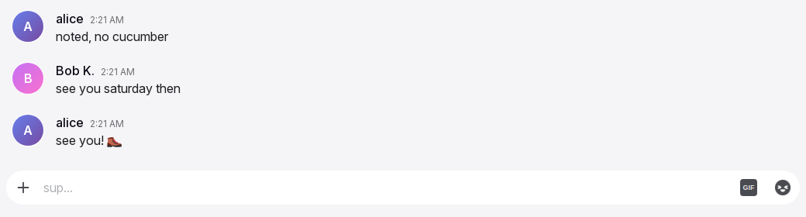
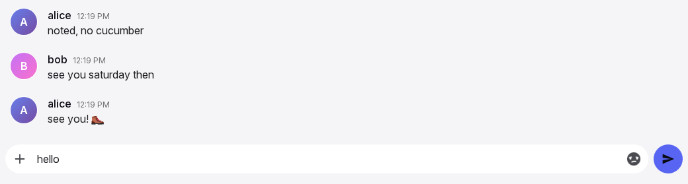
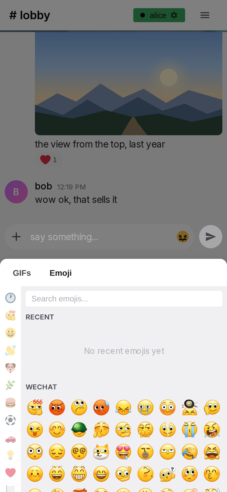

Input box
The input box is where a message is written and sent. It sits at the bottom of every conversation, room or direct message. It takes text, emoji, GIFs, images and videos. It shows who is typing in the conversation and which message is being replied to. Every action in it answers at once; nothing in the box waits for the server.
Anatomy



- Typing strip. An 18 px band above the box. It shows who is typing in this conversation. When nobody types it is empty but keeps its height, so the box never jumps.
- Reply bar. Shown only while replying. "Replying to" and the name on the left, ✕ on the right. It sits directly on the pill and forms one block with it.
- The pill. A rounded field with 22 px corners in the theme's input colour. It holds +, the text area and the two toggles. The band around the pill is transparent, so only the pill is coloured.
- + (attach). On the left inside the pill. Opens the file chooser.
- Text area. One line at first. It grows with the text up to 200 px, then scrolls.
- GIF toggle. A small badge with the text "GIF". Desktop only. It collapses while the draft has text.
- Emoji toggle. A grey silhouette of a random emoji. It turns to full colour on hover and while its picker is open.
- Send. A paper plane, outside the pill on its right. Hidden while the draft is empty.
- Read-only bar. Replaces parts 2 to 8 in a room where the user may not write.
- Pickers. The emoji and GIF pickers open from the toggles: above them on desktop, as one bottom sheet on a phone. Their content is on the pickers page.
Rules
Layout and look
IB-01The input box is the last block of the conversation column, under the message list, on every conversation page.
IB-02The pill has 22 px corners and the theme's input colour. The band around it stays transparent. Why: a coloured band competes with the message list; one theme tried it and it was taken back.
IB-03Inside the pill, from left to right: +, the text area, the GIF toggle, the emoji toggle. Send sits outside the pill with an 8 px gap. All items align to the bottom edge, so the buttons stay in place when the text grows.
IB-04The text area starts as one line and is at least 44 px high. It grows with its content up to 200 px, then scrolls without a visible scrollbar. Long words break inside the box.
IB-05After a send the text area returns to one line at once.
IB-06On desktop the +, GIF, emoji and Send buttons are 44 px circles. On a phone they are 40 px.
IB-07On a phone the draft text is 16 px, whatever the user's text size setting says. On desktop it follows the setting. Why: iOS zooms the page when a smaller field takes focus.
IB-08The phone layout applies when the window is 600 px wide or less. It depends on width, not on the device type.
IB-09While the reply bar is shown, the pill's top corners are square and the bar sits on it with no gap, so bar and pill read as one block.
Typing text
IB-10Keystrokes, deletions and pastes act in the box at once. Nothing in the box waits for the server. See General rules.
IB-11On a device that cannot touch, Enter sends and Shift+Enter inserts a newline. Enter with an empty or whitespace-only draft does nothing.
IB-12On a device that can touch, Enter inserts a newline. Only Send sends.
IB-13While an input method editor composes a character (for example Japanese or Chinese input), Enter goes to the editor and does not send.
IB-14A message holds at most 4000 characters. The box does not accept more, and a paste beyond the limit is cut at the limit.
IB-15Pasting text is the normal paste. Pasting images or videos uploads them as attachments (see IB-29 to IB-37) and pastes no text from that clipboard. Pasted files of other kinds are ignored.
IB-16In a direct message the placeholder is "Message @{username}". In a room it is one text picked at random from the configured list when the conversation opens, and it stays until the user leaves the conversation. The placeholder is never empty.
IB-17Escape closes the topmost open layer: a dialog when one is open, else a picker. Escape never clears the draft and never cancels a reply.
Send
IB-18Send is hidden while the draft is empty and no picker is open. It collapses in 0.15 s and the pill takes its space. "Empty" means no character at all; a single space shows the button.
IB-19With text in the draft, Send has the accent colour and a white icon. A theme may give it a soft glow. No other control in the chat glows.
IB-20With a picker open over an empty draft, Send is visible and dimmed. Why: the user sees that sending is one step away once something is picked.
IB-21Send is never disabled. A tap with a whitespace-only draft sends nothing and leaves the draft as it is.
IB-22A tap or click on Send never moves focus. An open phone keyboard stays open; a closed one stays closed. Why: a focus move here closed the picker under the finger, and the keyboard opened after every send.
IB-23On a phone, after emoji were picked with the sheet open, the first tap on Send sends.
IB-24A send acts at once, before any answer from the server: the draft is cleared, the text area shrinks to one line, an open picker closes, a pending copy of the message appears at the end of the list, and the list scrolls to it. Text typed right after a send goes into the empty box.
IB-25The pending message is a full message row, faded, at the end of the list. It becomes a normal row when the server accepts it. Its look is on the message row page.
IB-26A message that could not be sent shows its row as failed, with the reason, Retry and Remove. Remove deletes the message from this device and nothing else.
IB-27A send with the reply bar open sends a reply and closes the bar at once.
IB-28Messages sent quickly one after another appear in the order they were sent.
Attachments
IB-29+ opens the system file chooser for images and videos, several at once. On a phone the chooser offers the camera and the photo library. + stays visible while the user types.
IB-30Dropping files on the input box uploads them the same way. While a file (not text) is dragged over the box, the box shows "Drop images here" with an accent ring. The ring clears on drop, when the drag leaves, and when the drag is cancelled. A drop anywhere else does nothing, and the browser does not open the file.
IB-31Accepted types are images .jpg, .jpeg, .png, .gif, .webp and videos .mp4, .webm, .mov, .avi, .mkv. Dropped or pasted files of other kinds are ignored. A file of another kind chosen with + is listed as unsupported in the upload dialog before anything is uploaded. Why: the old page let such a file wait half a minute before it failed.
IB-32One file may be up to the configured size limit, 100 MB by default. One message holds at most 10 files; a larger pick is refused with "Choose at most 10 files." and nothing is uploaded.
IB-33All files of one pick go out together, at once, as one message with no text. The draft text stays in the box. A GIF file becomes a GIF attachment, the same as one sent from the picker.
IB-34While files upload, the pending row shows the file names, one progress bar for the whole message, and "Cancel upload". Cancel removes the pending message and discards what was uploaded for it; nothing is sent.
IB-35Files refused before the upload starts (wrong kind, too large, too many) are reported in one dialog: "Upload failed" when no file is left, "{s} of {t} files uploaded" when some are, with one line per refused file. The files that are left still go out. A failure during the upload itself shows the pending row as failed instead, with Retry and Remove. The dialog closes with "Got It", with ✕ or with a tap outside it. It moves no focus and never closes the keyboard.
IB-36An upload during a reply is a reply, and it closes the reply bar.
IB-37The same file can be picked again right after a pick.
The pickers, seen from the box
IB-38A tap on the emoji toggle or the GIF toggle opens its picker at once, on the first tap of the session too.
IB-39On desktop the GIF toggle collapses while the draft has text. The emoji toggle stays. Why: a GIF is a message of its own and cannot be added to a text.
IB-40On desktop a picker opens above the toggle group, right-aligned, with an 8 px gap. The rest of the page stays visible and a tap anywhere outside closes the picker.
IB-41On a phone there is no GIF toggle. The emoji toggle opens one bottom sheet with two tabs, "GIFs" and "Emoji", with Emoji active at first. The sheet is half the screen high, at most 400 px. The box moves up to sit on the sheet. Everything else is dimmed to half, except the draft text, the sheet and Send. The sheet remembers its tab until the page is reloaded.
IB-42While a picker is open: a tap on + only closes the picker, the chooser does not open. A tap on the other toggle only closes the picker. A tap on the open picker's own toggle closes it. A tap on the draft focuses the draft and closes the picker in one gesture. A tap anywhere else closes it.
IB-43A picker also closes on a send, on a GIF pick, when the conversation changes, when the window crosses the 600 px width, and on Escape.
IB-44Picking an emoji inserts it into the draft at the caret. If the draft was never focused, or the conversation changed since, it goes to the end. If text is selected, the emoji goes in front of it and the selection is released, with the caret after the emoji. The pick does not move focus, keeps the picker open, counts as typing, and updates the user's recent emoji. Several picks insert one after another. A custom pack emoji inserts its shortcode text, for example ":name:".
IB-45At rest the emoji toggle shows a grey silhouette of a random emoji. Each time the mouse enters, a new random emoji is picked and shown in full colour; the silhouette then matches it. The toggle stays in colour while its picker is open.
IB-46The GIF toggle is a 22 px badge with the text "GIF". It brightens on hover and while its picker is open.
IB-47Picking a GIF card sends the GIF as a message of its own, at once: the picker closes, a faded pending row with the GIF appears at the end of the list, and the list scrolls to it. The draft text is untouched. A GIF send with the reply bar open is a reply and closes the bar. A tap on a card's star changes the favourite only.
IB-48A reopened emoji picker has an empty search and fresh recents. The GIF picker keeps its tab and folder.
Reply bar
IB-49Reply on a message shows the bar: "Replying to" and the author's display name, or username when there is none, with ✕ on the right. A long name is cut with an ellipsis. The replied-to row has an accent tint while the bar is open.
IB-50Reply moves focus into the draft inside the tap, so a phone keyboard opens. Reply is the only action besides a tap on the draft that does this.
IB-51✕ closes the bar and moves no focus.
IB-52The reply target belongs to the draft of its conversation. It is kept with the draft (IB-53) and cleared by the send.
Drafts
IB-53Each conversation has its own draft, with its reply target. Leaving a conversation and coming back shows the draft again. A reload, or a reopened app, keeps drafts.
IB-54Drafts stay on the device. Nothing of a draft reaches the server before Send.
IB-55Signing out deletes all drafts on the device. See Sign-in and sessions.
IB-56When a room becomes read-only while the user types, the read-only bar replaces the box. The draft is kept and comes back when writing is allowed again.
Focus
IB-57Nothing moves focus into the draft on page load or on a conversation switch. Why: on a phone a focus opens the keyboard over the messages the user came to read.
IB-58Only two actions move focus into the draft: a tap on it, and Reply. Emoji picks, Send, ✕, picker toggles and dialogs never move focus.
Who is typing
IB-59Others see the user as typing from the first non-blank keystroke, paste or emoji pick, until 3 s after the last one, until the draft is blank, until a send, or until the user leaves the conversation.
IB-60The typing strip shows who types in this conversation. In a direct message: "{name} is typing...". In a room: a random text from the configured lists for one, two, or more people. The user's own name is never shown. The text is small and grey, with three bouncing dots in front.
IB-61The typing strip also shows in a read-only room, because people with permission can write there.
No permission, no connection
IB-62In a room where the user may not write, the read-only bar replaces the reply bar and the box: a lock icon and "You do not have permission to send messages in this channel". Direct messages are always writable. A permission change applies at once to the open room.
IB-63Without a connection the box works as usual: typing, emoji, pickers and drafts. Send accepts the message and shows it as pending; a GIF pick and a file pick are accepted the same way. The message goes out when the connection returns, also after the app was closed and reopened. See Offline and installation.
IB-64A pick of files is accepted without a connection up to 25 MB in total. A larger pick is refused and the box says "Needs a connection".
IB-65A pending message that has waited more than one day is shown as failed, with Retry and Remove.
States
| State or trigger | Input | What the user sees |
|---|---|---|
| Empty draft, no picker | all | Placeholder in the pill. Send hidden. GIF badge and grey emoji icon visible (desktop); + and emoji icon (phone). |
| First character typed | keyboard, touch | Send appears in 0.15 s. On desktop the GIF toggle collapses. |
| Draft deleted to empty | keyboard, touch | Send collapses, or stays dimmed while a picker is open. The GIF toggle returns. |
| Whitespace only | keyboard, touch | Send visible and bright. A tap sends nothing; the spaces stay. |
| Four lines | keyboard | The pill is taller; +, toggles and Send stay at the bottom edge. |
| More than 200 px of text | keyboard | The text area stops growing and scrolls. No scrollbar. |
| Enter | keyboard, no touch | Sends. Empty or whitespace: nothing. |
| Shift+Enter | keyboard | Newline. |
| Enter | touch device | Newline. |
| Enter while composing (IME) | keyboard | Goes to the input method editor. |
| Escape | keyboard | Closes the topmost layer: a dialog, else a picker. Draft and reply unchanged. |
| Send tap or click | mouse, touch | Draft cleared, box one line, picker closed, pending row at the end of the list, list scrolled. Focus unchanged. |
| Send accepted | all | The pending row becomes a normal row. |
| Send failed | all | The row shows the reason, Retry and Remove. |
| Hover emoji toggle | mouse | The silhouette turns to a random emoji in colour. |
| Emoji toggle tap, empty draft | mouse, touch | Picker opens at once. Send visible and dimmed. Phone: sheet, dimmed page, box on the sheet. |
| Emoji picked | mouse, touch | Emoji at the caret. Send bright. Picker stays open. Focus and keyboard unchanged. |
| Send tap with the sheet open | touch | Sends on the first tap. Sheet closes. Keyboard unchanged. |
| GIF toggle tap, empty draft | mouse | GIF picker opens, badge bright. |
| GIF card tap | mouse, touch | Picker closes, faded GIF row at the end of the list. |
| Tap on + with a picker open | mouse, touch | Picker closes. The chooser does not open. |
| Tap on the other toggle with a picker open | mouse | Picker closes. No switch. |
| Tap on the draft with a picker open | mouse, touch | Draft focused, picker closed, one gesture. |
| Conversation changed | all | Picker closed. The new conversation's draft and reply bar appear. |
| Reply on a message | mouse, touch | Bar "Replying to {name}" on the pill, row tinted, draft focused. |
| ✕ on the reply bar | mouse, touch | Bar gone, tint gone, focus unchanged. |
| File dragged over the box | mouse | "Drop images here" and the accent ring. |
| File dropped outside the box | mouse | Nothing. |
| Files chosen, dropped or pasted | all | One pending row with file names, a progress bar and "Cancel upload". Draft text unchanged. |
| Some files refused before upload | all | Dialog "{s} of {t} files uploaded" with one line per refused file. The rest goes out. |
| All files refused before upload | all | Dialog "Upload failed" with one line per file. |
| Upload fails midway | all | The pending row shows Failed, the reason, Retry and Remove. |
| Room becomes read-only | all | Lock icon and the read-only text replace the box. Draft kept. |
| Someone types in the conversation | all | Typing strip text with three dots. Gone 3 s after their last keystroke. |
| No connection | all | Box unchanged. Send shows a pending row; it sends later. The header shows the connection state. |
| No connection, a pick over 25 MB | all | The pick is refused; the box says "Needs a connection". |
Wording
| Where | Text |
|---|---|
| + tooltip and accessible name | "Upload files" |
| GIF badge | "GIF" |
| GIF toggle tooltip and accessible name | "GIF picker" |
| Emoji toggle tooltip and accessible name | "Emoji picker" |
| Send tooltip and accessible name | "Send message" |
| Reply bar ✕ accessible name | "Cancel reply" |
| Room placeholders (configured list; these are the defaults) | "say hi...", "sup...", "spill the tea...", "say something...", "drop a hot take...", "type your truth...", "go off...", "send it..." |
| Placeholder when the list is missing | "Type a message..." |
| Placeholder when the picked text is empty | "Say something…" |
| Direct message placeholder | "Message @{username}" |
| Reply bar | "Replying to " followed by the name in bold; "✕" |
| Read-only bar | "You do not have permission to send messages in this channel" |
| Drop hint | "Drop images here" |
| Pending row with files | "Cancel upload" |
| Failed row | "Failed", the reason, "Retry", "Remove" |
| Upload dialog titles | "Upload failed"; "{s} of {t} files uploaded" |
| Upload dialog lines, one per file | "{name}" — unsupported file type; "{name}" — too large ({size} MB, max {max} MB) |
| Upload dialog, too many files | "Choose at most 10 files." |
| Upload dialog, unexpected error | "Something went wrong while uploading your files" |
| Dialog buttons | "Got It"; "✕" |
| GIF dialog title | "Couldn't send GIF" |
| GIF dialog texts | "That GIF isn't available anymore — try another one."; "File is too large (max 50MB)"; "Could not process this file as a GIF"; "Upload failed" |
| Phone sheet tabs | "GIFs", "Emoji" |
| Typing, direct message | "{name} is typing..." |
| Typing, one person in a room (configured; defaults) | "{0} is cooking..", "{0} boutta drop heat..", "{0} typing their villain arc..", "{0} lowkey struggling..", "{0} channeling their inner poet..", "{0} manifesting a message..", "{0} is in their typing era.." |
| Typing, two people (configured; defaults) | "{0} and {1} are cooking..", "{0} and {1} causing chaos..", "{0} and {1} boutta spam..", "{0} and {1} racing fr fr..", "{0} and {1} typing faast.." |
| Typing, three or more (configured; defaults; {0} the first name, {1} the number of others) | "{0}, {1} and more going crazy..", "chat's popping off: {0}, {1} + others..", "{0} and {1} causing chaos..", "typing apocalypse: {0}, {1} and more..", "{0} and {1} others said bet..", "everyone typing their hot takes.." |
| Typing when the lists are missing | "{0} is typing..", "{0} and {1} are typing..", "{0} and {1} others are typing.." |
| No connection, too much to queue | "Needs a connection" |
Related
- General rules for acting locally first.
- Emoji and GIF pickers for the content and behaviour of the pickers.
- Message row and actions for the pending and failed rows, Reply, and editing.
- Timeline and media for scrolling after a send and the behaviour when the keyboard opens.
- Presence for how typing is shown to others.
- Offline and installation for sending without a connection.
- Sign-in and sessions for what signing out removes from the device.